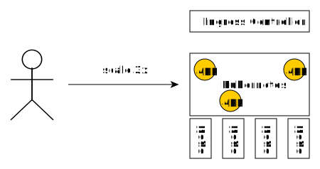

Effective Platform Building
with Kubernetes
Wojciech Barczyński - SMACC.io | Hypatos.ai
18 December 2018
Wojciech Barczyński
- Lead Software Developer
& System Engineer - Organizer Golang Warsaw Meetup
- Visiting Lecturer at WSB and ALK
- 2019 ➡ Trainings & Consultancy
Story
Kubernetes + Go + ...
- SMACC - Fintech / ML - since 2017
- Lyke - Mobile Fashion app - since 2016
I do not like Infra
Kubernetes
- Container management
- Battery for 12factor apps
- ...heading to integration platform
- ...becoming a framework for your Xubernetes
Kubernetes

make docker_push; kubectl create -f app-srv-dpl.yaml
Scale up! Scale down!
kubectl --replicas=3 -f app-srv-dpl.yaml
Deployment and Pods

Service and pods

Service matches pods based on labels
Basic Concepts
| Name | Purpose | |
|---|---|---|
| Service | Interface | Entry point (Service Name) |
| Deployment | Factory | How many pods, which pods |
| Pod | Implementation | 1+ docker running |
All in git
smacc-platform.git
- branches: dev, staging, master
- Generated k8s files
- ENV variables for each of environment
Similar to the Kelsey Hightower approach
Kubernetes
- Pure and generated
from simple templates with ${ENV_VAR} - 2x kubernetes operators
Lyke
- E-commerce Indonesia
- Mobile-only
- 50k+ users
- 2M downloads
- Top 10 Fashion Apps
Google Play Store
http://www.news.getlyke.com/single-post/2016/12/02/Introducing-the-New-Beautiful-LYKE
Now JollyChic Indonesia


Monitor legacy with new stack
SMACC
- Machine Learning FinTech
- SaaS and API platform
- From Enterprise (Deutsche Bank, AoK) to SME
- Well-known FinTech Startup in Germany
Get to K8S
- Legacy on AWS, experiments with AWS ECS :/
- Self-hosted K8S on ProfitBricks
- ooo... K8S can use Azure Active Directory :D
Run everywhere!
- Get to Microsoft ScaleUp, welcome Azure
- Luckily - Azure Kubernetes Service
- With GPU integration :)
- Our OnPrem = Our OnCloud
Keep it simple
- az aks CLI for setting k8s - README.rst
- Terraform for everything else
- Secrets: 1Password and gopass.pw
Terraform also sets our AWS
Migration was easy...
- Tech-wise yes
- Team-wise no
Difference ☠
- Two teams in Berlin and Warsaw
- Me in Warsaw
Repo .travis.yml
language: go
go:
- '1.16'
services:
- docker
install:
- curl -sL https://${GITHUB_TOKEN}@raw.githubusercontent.com/smaccio/smacc-ci/master/prerequisites.sh | bash
- if [ -f "tools/travis/install.sh" ]; then bash tools/travis/install.sh; fi;
script:
- dep ensure
- make lint
- make test
- if [ -z "${TRAVIS_TAG}" ]; then make snapshot; fi;
deploy:
- provider: script # deploy to docker repo
script: make release
skip_cleanup: true
on:
tags: true
all_branches: true
condition: "$TRAVIS_TAG =~ ^v.*"
- provider: script # to staging cluster
script: curl -sL https://${GITHUB_TOKEN}@raw.githubusercontent.com/smaccio/smacc-ci/master/deploy.sh | bash
skip_cleanup: true
on:
tags: true
all_branches: true
condition: "$TRAVIS_TAG =~ ^v.*"
- provider: script # enforce to dev cluster
script: curl -sL https://${GITHUB_TOKEN}@raw.githubusercontent.com/smaccio/smacc-ci/master/deploy_snapshot.sh | bash
skip_cleanup: true
on:
all_branches: true
condition: $TRAVIS_BRANCH =~ ^master|develop$ # squad decide
notifications:
slack:
rooms:
- smaccio:PLAIN_TEXT_HASHMakefile
|- tools
| |- Makefile
| |- kube-service.yaml
| \- kube-deployment.yaml
|
|- Dockerfile
\- MakefileMakefile only tasks for dev
Continuous Deployment
- Github
- TravisCI
- hub.docker.com
- AKS
Continuous Deployment
git tagandpush- smacc-platform.git
- Deploy to staging
- PR to production
What worked
- Hiding k8s
- Understandable CD process
Would do different
- More sensitive to feedback
Next
- Scale our ML trainings on the top of k8s - kubeflow
- Use CRD to bring exteranl tools to k8s
- Keeping an eye on Istio
- Deployment tool based on missy
Effective Kubernetes
- Start with small iterations
- Learn as-you-go
- Keep Kubernetes Understable
Hope the k8s community keep it this way
Effective Kubernetes
- Move configuration to runtime
- Do not terrorize your devs with K8S
- No free lunch... app must be smarter
Big thanks to my colleages in Lyke and SMACC
Thank you. Questions?
github.com/wojciech12/talk_effective_kubernetes
Backup Slides
Lyke
- E-commerce
- Mobile-only
- 50k+ users
- 2M downloads
- Top 10 Fashion Apps
w Google Play Store
http://www.news.getlyke.com/single-post/2016/12/02/Introducing-the-New-Beautiful-LYKE
Now JollyChic Indonesia
Good parts
- Fast Growth
- A/B Testing
- Data-driven
- Product Manager,
UI Designer,
Mobile Dev,
and tester - one body
Monitor legacy with new stack
Kubernetes Concepts+
Pods
- See each other on localhost
- Live and die together
- Can expose multiple ports

Side-cars